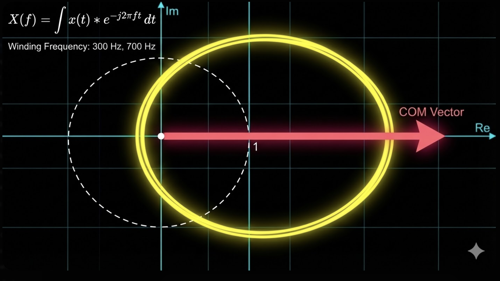
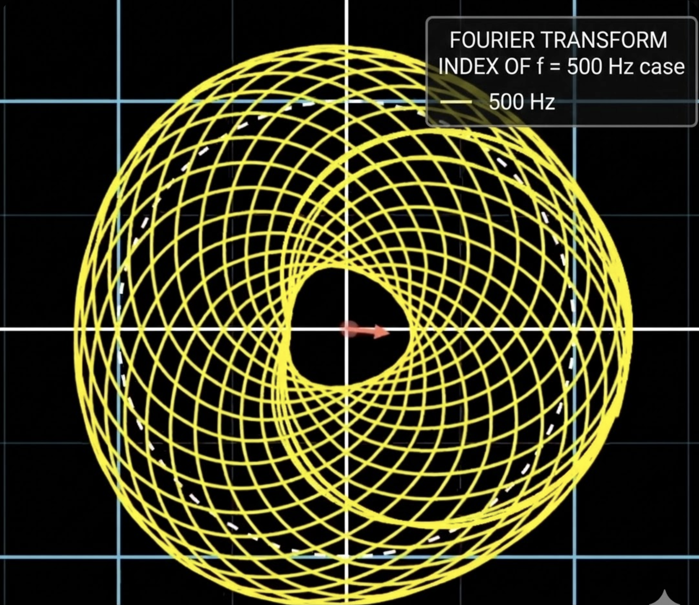
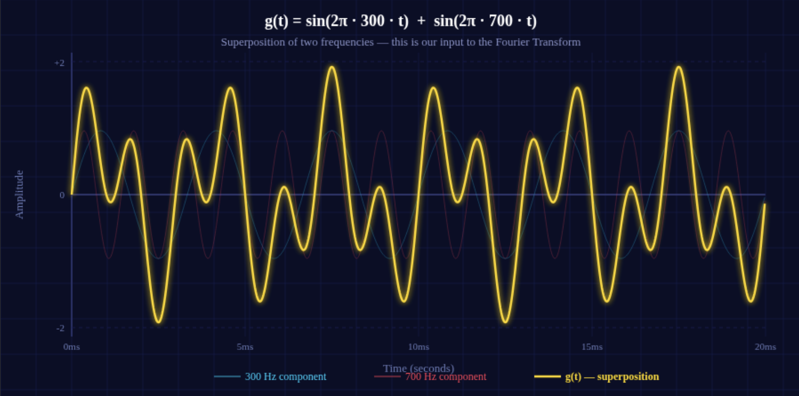
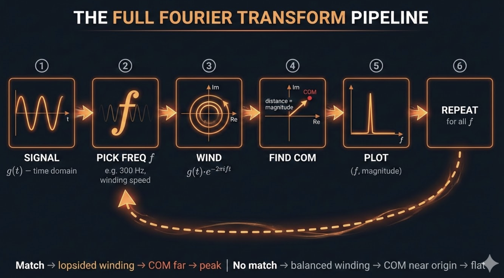

Why This Piece Exists
I am writing my understanding of the Fourier Transform, more like an intuition and what I understood from it and its application in sound frequency analysis. The purpose of this piece is to get the intuition of how the Fourier Transform helps us get to frequency domain features from time domain features - not getting into heavy maths and derivations, instead we'll try to simplify the meaning conveyed from the complex math equations.
Before we get into the Fourier Transform, you should have a basic understanding of how digital sound is stored - specifically sampling and quantization. Let me quickly cover it here so we're on the same page.
Sound in the real world is a continuous wave - air pressure changing smoothly over time. But computers can't store continuous things. They need numbers, discrete values. So to store sound digitally, we do two things.
We take "snapshots" of the sound wave's amplitude at regular intervals. How many snapshots per second? That's the sampling rate. CD-quality audio takes 44,100 snapshots per second (44.1 kHz). For speech in ML pipelines, 16,000 per second (16 kHz) is common and that's mostly enough.
I have worked with 16kHz speech data extensively and honestly it captures pretty much everything that matters for speech. The key idea is that we're converting a smooth continuous wave into a series of discrete points in time.
Each snapshot needs to record how loud the wave is at that moment, and with how much precision. This is the bit depth. With 16-bit audio, each amplitude value can be one of 65,536 possible levels (2¹⁶). That's more than enough for the human ear to not notice the difference from the original. With only 8-bit, you'd have just 256 levels - the audio would sound rough and grainy because the gap between the true amplitude and the closest storable value (this gap is called quantization error) becomes audible.
So after sampling and quantization, what we have is a sequence of numbers - amplitude values at evenly spaced time steps - stored in the computer. That's our time domain signal. That's g(t). And that's what the Fourier Transform takes as input.
I've spent a good amount of time working hands on with audio data preprocessing and model training, mostly dealing with speech data. So while this builds everything from first principles, a lot of what's written here comes from actually running into these things in real pipelines, not just textbook reading.
Also a promise - no AI slop here. Let's get into it.
The Setup: What We're Starting With
So basically, we have the original audio signal which, for complex sounds (including harmonic sounds too) like human voice or musical instruments and other kinds of sounds, are often made up of a combination of frequencies - constituent frequencies, or let's say a superposition of frequencies.
The continuous sound I'm talking about is in the time domain. It would basically be an amplitude vs. time graph. That is how the sampled points from the original sound are stored in the computer in the time domain in digital format.
Now, the Fourier Transform (FT) is the thing through which we get that graph to be converted from time domain (X-axis → Time, Y-axis → Amplitude) into a frequency domain one (X-axis → Frequency, Y-axis → Amplitude of contribution).

If you've ever used librosa.stft() or np.fft.rfft() in your ML pipeline and wondered what's actually happening under the hood when you go from raw audio to a spectrogram - this is the thing. The Fourier Transform is the foundation underneath all of it.
Now we'll talk more on an intuition level about what's our aim and how we get what we want from the Fourier Transform. Let's try to understand in an organised way.
Our Goal
To get the values of those frequencies, the combination of which the original sound is made of. By original sound, what is meant is the digital sound that we have stored through sampling points and quantization through ADC into our digital system. In easy language - to get the values of consituent frequencies from which the complex sound is made of.
It's analogous to having a bucket in which all colors are mixed and we want to segregate the constituent colors. The bucket mixed with colors is the original audio signal. The constituent colors are the constituent frequencies.
We want a graph which easily tells us which frequencies have what amplitude of contribution in making the original sound. So the x-axis of that graph should have all the frequency values and the y-axis should have the amplitude of contribution corresponding to each frequency. The frequencies that are actually present in the signal will show up as peaks. Everything else will be near zero.
It's obvious, as the graphs sound so different, there would be mathematics involved, and to be honest, advanced tools of mathematics like the Fourier Transform and complex numbers are used to convert from our input (Time domain graph) → Output (Frequency domain graph). But to get the intuition of WHY the Fourier Transform does the job correctly, it's essential to understand WHAT the Fourier Transform does such that our goal is achieved. Then we'll get to know HOW it helps us achieve it at an intuition level.
So the WHAT, HOW, and the WHY?
The WHAT: What Does FT Actually Do?
In answering the WHAT, we don't need to see what math is going on inside, we just want to know what input it takes and what output it gives. We will treat it like a black box.
So here's the thing - the input to FT is the entire original audio signal g(t), the complete time domain waveform. Now we evaluate FT at a specific frequency value f, and the output for that frequency f is a single complex number. This complex number is called the Fourier coefficient for frequency f.
Now the question is: WHAT is that complex number that FT outputs, right? Like, what do we get from it?
From this complex number, we extract two things:
Magnitude = √(Real² + Imaginary²) - this tells us the amplitude of contribution of frequency f in the original signal. High magnitude means f is strongly present in the original audio. Low magnitude means it's barely there or not there at all.
Phase = arctan(Imaginary / Real) - this tells us the phase offset of that frequency component. It tells us where in its cycle that frequency starts. We'll talk about phase properly later, don't worry about it right now, just know that this information also comes out of the same complex number.
So basically what happens is - we do this for every frequency we care about. For each f, we get one complex number, extract the magnitude, and plot it. The collection of all these (frequency, magnitude) pairs gives us the frequency domain graph. That's the WHAT.
Now let's see HOW that complex number actually comes - what's the mechanism inside FT that produces it?
The HOW: How Does FT Compute This?
So here's where things get really beautiful, believe me.
The Winding Machine
The core idea is that we wrap the original signal around a circle in the complex plane. The speed at which we wrap depends on the input frequency f.
Mathematically, for a given frequency f, we compute:
at every point in time t, and plot the result on the complex plane (real axis, imaginary axis). Now let's break this down, because it's essential to understand how to visualize and interpret what's happening here.
Here's an important thing to visualize: in the original g(t) graph, as time t increases, we are simply moving from left to right along the time axis - it's a straight line, we never come back. But in the complex plane, we are moving in a circle around the origin (0,0). So as time progresses, we keep coming back to the same angular positions - every time one full loop is completed, we start over from the same angle. The speed at which one full circle is completed depends on f: one full rotation happens when 2πtf = 2π, which means t·f = 1, so it takes 1/f seconds to complete one loop. Higher f → faster looping. Lower f → slower looping.
Now you might think - since we keep coming back to the same angular positions, does the second loop trace the exact same path as the first? Like, in the time domain, each individual constituent frequency is a repeating sine wave, right? The 300 Hz component repeats every 1/300 seconds, the 700 Hz component repeats every 1/700 seconds. Each one individually has a clean repeating pattern. So when we wind g(t) around the complex plane, shouldn't the path from 0 to T (one period, T = 1/f) and from T to 2T be exactly the same? Shouldn't the loops overlap perfectly?
No. And this is a subtle but important thing to understand early.
The individual constituent frequencies inside g(t) do repeat - yes. But g(t) itself is not a single frequency. It's a superposition of multiple frequencies mixed together. Even though the angular position in the complex plane resets every 1/f seconds (the e-2πift part completes one full loop), the distance from origin - which is g(t) - is different at time t versus time t + 1/f. That's because g(t) has other frequency components in it that don't repeat at the same rate as f. So the value of g(t) at the same angular position changes from one loop to the next.
Each loop traces a slightly different path in the complex plane. This is why later when we compute the Centre of Mass, we compute it over the entire path for the full duration - not just one loop. If g(t) happened to be a single pure sine wave at exactly frequency f and nothing else, then yes - every loop would be identical. But for any real-world signal with multiple frequencies, each loop is different, and we need to consider all of them.
Keep this in mind, it'll make more sense once we get to the COM section below.
At any particular time t:
As time progresses, the angle keeps rotating (because t increases), and the distance from origin keeps changing (because g(t) changes with the audio signal). The result is a path - a curve in the complex plane.
So how we can interpret this thing is that we are wrapping or winding the original sound signal g(t) around a circle, and the speed of winding and wrapping depends upon the input frequency f. Higher f means the curve wraps around faster. Lower f means slower wrapping. One full circle is completed when t·f = 1, so the time period of one full rotation is 1/f.
To visualize how this winding happens at different frequencies, see this video, it will show the complex graph shape in the complex plane at different frequencies → 3Blue1Brown - But what is the Fourier Transform?. Genuinely one of the best resources out there for this.
The Centre of Mass (COM)
Now here's where the magic happens. Once we have this wound-up curve in the complex plane, we calculate its Centre of Mass (COM).
Think of the wound-up curve as if it has uniform mass density, like a wire. The COM is the single point that represents the average position of the entire curve. We want the coordinates (Real, Imaginary) of this COM. Now how do we actually calculate this? Lets see.
Now our original sound g(t), as it is a digitally stored signal in a computer, it won't be continuous - we would have sampled points of the original sound. The corresponding same sampled points would be there on the complex plane too after applying g(t)·e-2πift. The more sampled points there are in the original audio, the more corresponding points there would be on the complex plane. It's an obvious thing.
A quick note before the formulas: what we've been discussing so far - the winding, the circular motion, the COM - all of that is the same whether we're talking about the continuous version (with integrals) or the discrete version (with summations). The core concept of what the Fourier Transform does doesn't change. So don't get confused when you see a summation (Σ) in one formula and an integral (∫) in another - they're doing the same thing conceptually. Summation is for our finite sampled points, integral is for the theoretical continuous case. For building intuition, you can think of either one - the idea is identical. Just different tools for the same job.
So for our discrete digital signal with N sampled points, the COM coordinates are:
This is the discrete version - and this is exactly what's happening when you call np.fft.rfft() or np.fft.fft() in Python. It's computing this winding + COM calculation for all frequencies at once. That one function call is doing this entire process across every frequency bin simultaneously.
Now just imagine if this is not done digitally. In that case, we don't need sampled points and we can work on a continuous function. That means we will have infinite continuous points of original audio and corresponding infinite points on the complex plane. Instead of summation, we can integrate:
Integration over limits → t₁ and t₂ (time duration of original sound), integration over → g(t)·e-2πift, and the output is the complex Fourier coefficient for that frequency f. This is the continuous Fourier Transform formula. In practice we always work with the discrete version since we're dealing with digital audio, but the continuous form is good to know because it shows the same idea without the distraction of indices and array lengths.
One thing worth noting - the limits t₁ and t₂ matter. The final COM you get actually depends on how much of the signal you're including. A different time segment could give a different COM for the same frequency. For this article, we're applying FT to the full signal, so t₁ and t₂ are simply the start and end of our entire audio. But when you later get into STFT (Short-Time Fourier Transform), you'll see that deliberately choosing short time segments and applying FT to each one is exactly the idea - and that's where window size becomes a design decision.
Now when we get the COM coordinates, we calculate its distance from the origin:
This magnitude is the amplitude of contribution of frequency f in the original audio signal. That's what gets plotted as the y-value for this frequency in the frequency domain graph.
The intuition for what this magnitude means: if the COM is at a significant distance from the origin, that frequency has a strong contribution in the original signal. If the COM is sitting near or around the origin, that frequency is barely present or not present at all. The distance from origin is directly telling us how much that frequency matters.
And remember what we discussed earlier about the loops not overlapping - this is where it pays off. The COM averages over all those slightly different loops, and that averaging is what makes the non-matching frequencies cancel out (their contributions point in different directions across loops and sum to near zero) while the matching frequencies pile up (their contributions consistently point in the same direction across loops).
Why COM Works: The Key Insight
This is the part that makes the whole thing click. Read this carefully.
When the winding frequency f matches a constituent frequency of the signal, something special happens. The wound-up curve becomes lopsided - the points pile up on one side of the complex plane. The COM lands far from the origin. High magnitude. We detect that frequency.

When f does NOT match any constituent frequency, the wound-up curve distributes roughly evenly around the origin. Points on one side get cancelled out by points on the opposite side. The COM lands near the origin. Low magnitude. That frequency isn't really present.

Match → lopsided → COM far from origin → peak in frequency domain. No match → balanced → COM near origin → flat in frequency domain.
That's it. That's how the Fourier Transform figures out what frequencies are inside the original signal.
Worked Example: Walking Through the Numbers
Alright let's make this concrete with actual numbers now. This is where the intuition becomes rock solid, trust me on this one.
Setup: Suppose our original audio signal is:
So this is a signal made up of exactly two frequencies: 300 Hz and 700 Hz. In the real world, this might sound like two pure tones playing simultaneously. We know the answer already - the frequency domain graph should show peaks at 300 and 700, and nothing else. Let's see if FT gets it right.

We apply the Fourier Transform at three frequencies: f = 300 Hz, f = 700 Hz, and f = 500 Hz.
FT at f = 300 Hz (a constituent frequency)
We wind g(t) around the complex plane at 300 rotations per second.
Now think about what happens - the 300 Hz component of g(t) is rotating at the exact same speed as our winding. Because of this, the 300 Hz part of the signal consistently lands on the same side of the complex plane. It doesn't cancel itself out. The wound-up curve becomes heavily lopsided in one direction.
What about the 700 Hz component? It's rotating at a different speed than our 300 Hz winding. Over time, it traces out a roughly symmetric path around the origin and averages out to near zero. It doesn't contribute to the lopsidedness.
Result: COM is far from origin. Magnitude is high. The frequency domain graph gets a tall peak at f = 300 Hz. Correct - 300 Hz is indeed a constituent frequency.
FT at f = 700 Hz (the other constituent frequency)
Same logic, just reversed. Now the 700 Hz component of g(t) matches the winding speed, so it piles up on one side. The 300 Hz component, being at a different speed, averages out.
Result: COM is far from origin. High magnitude. Tall peak at f = 700 Hz. Correct again.
FT at f = 500 Hz (NOT a constituent frequency)
We wind g(t) at 500 rotations per second. Now here's the thing - neither the 300 Hz component nor the 700 Hz component matches this winding speed. Both of them trace roughly symmetric paths around the origin in the complex plane. Nothing piles up consistently on one side. Everything just cancels out, the curve is pretty much centered around origin.
Result: COM is very close to the origin. Magnitude is near zero. The frequency domain graph is flat at f = 500 Hz - correctly telling us this frequency is not present in the signal.
The Frequency Domain Graph
After doing this for all frequencies, our frequency domain graph would show exactly two sharp peaks - one at 300 Hz and one at 700 Hz - with everything else near zero. We have successfully decomposed g(t) into its constituent frequencies. That's the Fourier Transform doing its job.
The color bucket analogy holds perfectly: we had a mixture (300 Hz + 700 Hz mixed together in the time domain), and the Fourier Transform segregated the constituent colors.
Seeing It in Code
For those who want to see this thing working in Python - here's the worked example in actual code, it's literally a few lines:
import numpy as np
# Create the signal: 300 Hz + 700 Hz
sr = 8000 # sampling rate
t = np.linspace(0, 1, sr, endpoint=False) # 1 second of audio
g = np.sin(2 * np.pi * 300 * t) + np.sin(2 * np.pi * 700 * t)
# Apply Fourier Transform - this is doing the winding + COM for all frequencies at once
fft_result = np.fft.rfft(g)
# Get magnitudes (amplitude of contribution for each frequency)
magnitudes = np.abs(fft_result)
# Get the frequency values corresponding to each bin
freqs = np.fft.rfftfreq(len(g), d=1/sr)
# The peaks in magnitudes will be at 300 Hz and 700 Hz
# Everything else will be near zeroThat's it. np.fft.rfft(g) is doing the entire winding + COM process we discussed above - for every frequency bin simultaneously. The np.abs() extracts the magnitude (distance of COM from origin), and the np.angle() would give you the phase offset if you needed it. The rfft specifically gives you only the useful half of the spectrum (up to the Nyquist frequency) since the other half is a mirror - if you've read the aliasing article, you know why.
Phase: The Hidden Variable
Now let's talk about something that confused me for a while - the phase. This thing would be better understood if you already have some understanding of phase and phase difference in terms of waves and sinusoidal waves, but I'll try to explain what I understood.
I know a lot of ML audio pipelines work with magnitude spectrograms only and throw phase away entirely. That's fine for many tasks - but understanding what phase is and what you're throwing away gives you a deeper understanding of the signal. And there are tasks where phase matters (speech synthesis, audio reconstruction, vocoder design). So this section is worth reading even if you're only doing magnitude-based feature extraction right now.
So the COM we get from FT is a complex number. It has a magnitude (distance from origin) and also an angle associated with it:
That angle tells us the phase offset of the frequency component f as it exists inside the original signal. In simple terms - it tells you where in its cycle that frequency component starts at t = 0.
A Misconception I Had
I initially thought that for constituent frequencies, this phase would always be 0. Like, if a frequency is part of the original signal, the COM should just lie on the real axis, right? Phase 0, maximum sync, all that. Makes sense intutively no?
That's not true, and here's why.
If the original signal is g(t) = sin(2π·300·t + π/4), the frequency 300 Hz is absolutely a constituent frequency - it's literally the only frequency in the signal. But its phase offset is π/4, not 0. The 300 Hz component doesn't start at zero amplitude at t = 0, it starts shifted by π/4.
The FT will correctly output a high magnitude at f = 300 Hz AND the angle of the complex number will be π/4, recovering the exact phase with which the 300 Hz component exists in the signal.
Phase is 0 only if the component happens to start at exactly the right reference point at t = 0. Otherwise, it can be anything. The magnitude tells you how much of that frequency is present. The phase tells you where in its cycle it starts. Both pieces of information come from the same complex number.
In code, you'd get these separately:
magnitude = np.abs(fft_result) # how much of each frequency
phase = np.angle(fft_result) # where in its cycle each frequency startsWhen you compute a magnitude spectrogram (which is what most ML pipelines do), you're keeping the first and discarding the second. Now at least you know what you're throwing away.
For Non-Constituent Frequencies
For frequencies that aren't part of the original signal (like f = 500 Hz in our worked example), the magnitude is near zero. The phase you get in this case is essentially meaningless - it's the angle of a near-zero vector pointing in some arbitrary direction. Think of it as noise. The direction doesn't mean anything when the vector has no length.
It's quite intuitive when you think about it: for a non-constituent frequency, whatever the COM coordinates come out to be, they're so close to the origin that the angle is just numerical noise, not meaningful information about the signal.
Why FT Handles Phase Automatically (This One Really Confused Me)
Okay so this is a subtle point that took me a while to get. And I want to explain it clearly because it's the kind of thing that bugs you once you start thinking about it.
Here's the question: the FT only takes frequency f as input, right? We don't give it a phase angle. But for a particular input frequency, we could get different correlations if we vary the phase alignment between our test wave and the original signal. So how does FT find the "best" phase - the one that gives the maximum possible magnitude for input frequency f?
The answer: FT doesn't search or optimize over phase at all. It doesn't need to.
Here's why, and the key is Euler's formula:
When we compute FT at frequency f, we're simultaneously correlating the signal with both cos(2πft) and sin(2πft). The real part of the output captures the cosine correlation. The imaginary part captures the sine correlation.
Now here's the important thing - any sinusoid at frequency f with any arbitrary phase φ can be decomposed as:
So regardless of what phase the component has in the original signal, the FT automatically captures it:
It's like measuring the length of a vector by projecting it onto both the x-axis and y-axis. No matter which direction the vector points, you always recover its full length through √(x² + y²). The complex exponential is basically testing all phases simultaneously because cosine and sine together cover all possible phase angles, they are orthogonal to each other.
No optimization. No searching. No iterating over phase values. Just the fact that cosine and sine are orthogonal and together they capture any phase. The math does it in one shot.
This is where I finally understood why complex numbers are used here and not just regular correlation with a single sine wave. Euler's formula is doing something very clever - it's correlating with two things at once and the complex number neatly packages both results together.
Putting It All Together
So the full picture of how we get from time domain to frequency domain:

The frequencies that are actually present in the original signal produce lopsided winding → COM far from origin → peaks in the graph. Frequencies that aren't present produce balanced winding → COM near origin → flat regions.
After doing this across all frequencies, we have the complete frequency domain graph. The peaks tell us the constituent frequencies of the original sound. That's the Fourier Transform - decomposing a complex signal into its building blocks.
The math is a tool to justify the intuition - the real understanding is in the winding, the Centre of Mass, and the way the complex exponential handles phase automatically through Euler's formula. Once these three things click, you get the Fourier Transform at an intuition level, and the heavy math derivations are just formalising what you already understand. And honestly once this clicks, you'll see FT everywhere in signal processing and it will all start making sense.
The WHY
Why does the Fourier Transform work? The intuitive answer is what we've built through this entire piece - matching frequencies create lopsided windings, non-matching frequencies create balanced ones that cancel out. The winding machine is essentially a correlation detector - it measures how much the original signal correlates with a pure sinusoid at each frequency. High correlation means COM far from origin which gives a peak, low correlation means COM near origin and we get a flat region in the graph.
At its core, why this works rigorously would require heavy math derivation involving orthogonality of sinusoidal functions and properties of complex exponentials - which isn't the purpose of this piece. But the intuition we've built should be more than enough to understand what's happening and why the output makes sense. It works!
What Comes Next
This piece covers the continuous/conceptual Fourier Transform - the foundation. In practice, when you work with digital audio in ML pipelines, you're using the DFT (Discrete Fourier Transform) and its fast implementation the FFT. And when you compute spectrograms, you're using the STFT (Short-Time Fourier Transform) which applies the FT to small overlapping windows of the signal - that's where window size N, hop length, and overlap come in, but thats a topic for another writeup.
All of that builds directly on top of what we covered here. The winding machine, the COM, the magnitude and phase - it's the same mechanism, just applied to short chunks of audio instead of the whole thing at once. If this piece clicked for you, the rest will follow naturally. I might write about DFT and STFT in detail later.
Feel free to ping to ask anything related here:
Thanks for the patience if you've read this far, and thanks to grammarly for helping with the editing.